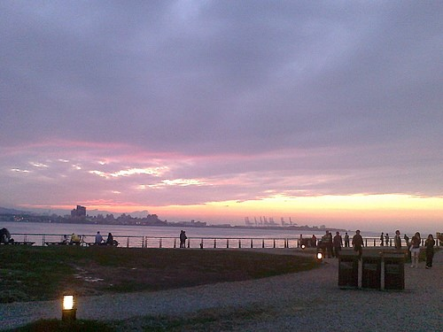
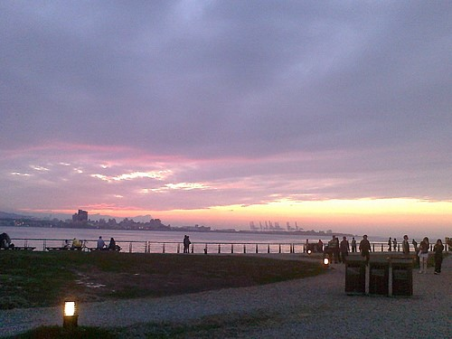
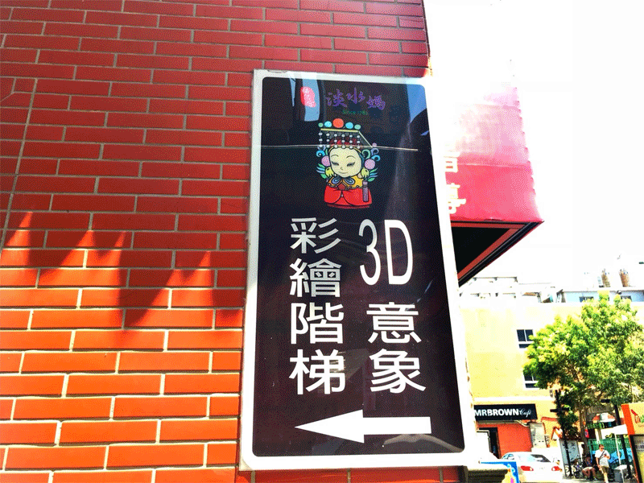
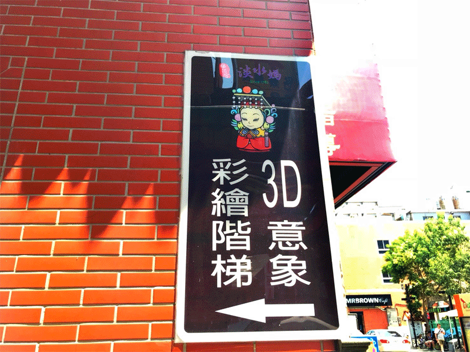

-
《淡水老街》 【營業時間】 全天開放。
從淡水捷運站走出來右轉，就是鼎鼎大名的「淡水老街」。淡水老街分成內外兩側，外側是靠淡水河岸的金色水岸步道，內側是的傳統老街。
這裡還有許多淡水著名的傳統人氣美食，像是阿給、魚酥、古早味現烤蛋糕、阿婆鐵蛋等。
而到了傍晚時分，還能在金色水岸步道欣賞夕陽落入海面的浪漫景色，讓您來到淡水不僅可以享受眾多新鮮美食，還可以欣賞美麗的河岸風景。
-
《淡水金色水岸》 【營業時間】 全天開放。
起至關渡大橋，終至淡水河口的漁人碼頭。以河岸遊憩體驗為主題所打造。規劃有林蔭步道、親水河岸、水上舞台、觀潮灣及休憩座椅等設施。
而近年因自行車風氣盛行，金色水岸也有一條經過紅樹林區、漁人碼頭及老街的自行車道，無論是朝陽升起時的活力，還是夕陽西下時的浪漫，皆有不同的炫麗風情。
來到淡水尋訪繁華老街、堤岸美景、古蹟洋樓，滿眼盡是懷舊情懷，絕對能讓人完全感受到淡水迷人的流金歲月。
-
《淡水漁人碼頭》 【營業時間】 全天開放。 【大眾運輸】 搭乘淡水捷運於「淡水站」下車，轉搭紅色26號公車即可抵達。
「淡水漁人碼頭」原是漁港，近年來擴建停車場、碼頭及觀光魚市，結合鄰近景點開發成多功能的觀光休閒漁港。
在傍晚前往漁人碼頭欣賞夕陽美景，晚間白色的船形情人橋在五彩霓虹燈下更顯浪漫。
漁人碼頭更經常舉行小型演唱會與多項藝文活動，假日時也有許多街頭藝人前往表演，為漁人碼頭增添藝術氣息。
-
《淡水老街-阿給》 【營業時間】 14:00(賣完提早打烊)。
「阿給」是台灣淡水老街鼎鼎有名的小吃，是從日文「油豆腐」的部分發音直譯而來。
作法是將油豆腐中間挖空，填加炒過的冬粉然後浸泡滷汁，再用魚漿封口加以蒸煮，最後淋上甜辣醬或是店家獨門的秘密醬料，讓油豆腐、魚漿、冬粉完美結合。
每天手工現做現蒸現賣，絕不冷凍過夜，因為油豆腐、魚漿不易保存，夏天更容易餿掉。故建議想去淡水老街吃阿給的旅客，中午以前到達比較保險。
-

《淡水老街-許義魚酥》 【推薦產品】 魚酥、魚丸。 【地址】 新北市淡水區中正路184號。
早年以新鮮魚丸製作為主，後來老闆許義發現只賣魚丸難以維生，另外發想慢慢研發，才有今天的「淡水魚酥」。
魚酥的作法是將黃魚或鯊魚的骨肉碾碎，和上蕃薯粉下鍋油炸至香脆，以塑膠袋封裝，成為攜帶方便的美味零食。
老闆也強調，這裡所販售的產品，包括魚丸、魚酥等食品，都是每天一大早以新鮮魚類為材料親自製作，不僅不帶腥味，還能吃到真正的鮮美海味。
-
《淡水老街-阿婆鐵蛋》 【地址】 新北市淡水區中正路135-1號。
『鐵蛋』顧名思義就是將雞蛋或者鳥蛋滷得呈現深褐色又小，而且堅硬無比，就像鐵一樣。
由於堅持不添加任何防腐劑，所以阿婆改由真空包裝，更能保持鐵蛋的新鮮度，讓遠地前來遊玩的旅客，能帶回道地的『阿婆鐵蛋』回去給家人一同享用喔。
-
《淡水3D彩繪階梯》 【開放時間】 24小時全天候開放
台灣各地有很多的彩繪巷弄圖騰，尤其是彩繪著代表性特色圖案最讓人印象深刻，在淡水三級古蹟福佑宮一旁的巷弄內，
彩繪著關渡大橋、淡水夕陽、淡水媽祖及和淡水有關的彩繪畫作。當站在彩繪階梯由上往下拍攝時，會覺得踏在會流動的水流瀑布上，相當立體。
【地址】 新北市淡水區中正路200號(淡水福佑宮旁的巷子) 【交通方式】 淡水捷運站→淡水老街→淡水福佑宮
-
《淡水雲門劇場》 【開放時間】 週二到週五 10:00-17:00
位於淡水高爾夫球場與滬尾砲台之間的雲門劇場，遠眺觀音山與淡水河出海口，淡綠玻璃幃幕的建築映照週遭高樹，融入恬靜的綠色地景宛如一座大樹屋。
享譽國際的雕術大師朱銘，為了慶賀雲門劇場的開幕，展示了許多座白彩人間系列的作品(展覽自2018/01/01至2018/12/23)，讓劇場外增加趣味與藝術感。
【地址】 新北市淡水區中正路一段6巷36號 【交通方式】 淡水捷運站2號出口→836公車/紅26公車→滬尾砲台(雲門劇場)→雲門劇場
-
《星巴克淡水雲門門市》 【營業時間】 週日至週四10:00-18:00／週五、週六10:00-19:30 【地址】 新北新淡水區中正路一段6巷32-1號(雲門劇場旁)
在雲門劇場旁還有一間整體建物採透明玻璃屋設計，兼具節能與自然採光的綠色建築「星巴克雲門門市」。
前方廣場上有一片綠意盎然的荷花池，池中的雕像是雕塑家林健成著作的青銅雕像「旋的冥想」，紀念雲門2創團藝術總監羅曼菲的舞影，也成了這最具代表的象徵地標。
-
《淡水沙崙海灘》 【開放時間】 24小時全天候開放 【地址】 新北市淡水區淡海路302號 【交通方式】 淡水捷運站2號→857公車→沙崙里→沙崙海灘
在漁人碼頭的不遠處，有座沙崙海灘，目前已關閉13年了，但那美麗的景色，自然成為捕捉幸福浪漫的好場地，因此許多新人到此拍攝婚紗。
如果幸運的話，還可以看到馬場裡的馬悠哉的散步在這金色海灘上。
雖然在這美麗的景色下不能下海玩水，不過在耀眼炙熱的陽光下享受海景、拍照玩沙，等待夕陽落下海平面，也是一件值得開心的事！
-

《淡江大學-守謙國際會議中心》 【開放時間】 上班日07:40-20:50；其他:彈性開放
守謙國際會議中心位於淡江大學，是一座首次以校友捐款所建造的大樓。守謙會議中心共有五樓，全棟外牆以清水模為建材興建而成。
在會議中心每層樓的外圍，有開放階梯能讓民眾由會議中心俯瞰淡水河，所以淡江大學的師生每到黃昏就會到此觀看夕陽，那種美景真是美不勝收。
【地址】 新北市淡水區英專路151號 【交通方式】 淡水捷運站2號→紅27/紅28→淡江大學
-
《十三行博物館》 【開放時間】 週一至週五 09:30－17:00 【地址】 新北市八里區博物館路200號
在博物館裡設立了八里從古至今的四個時期，從「史前時期」、「荷西時期」、「清初漢人出入墾時期」、「八里坌繁榮時期」，
將場景營造成生活情景劇場，利用音效、燈光及旁白，帶領觀眾認識十三行人一天的生活。為了能更理解考古工作，透過遊戲的方式來挖古物或是拼裝古物。
【交通方式】 捷運淡水站1號出口→渡船→紅13公車→十三行博物館 / 捷運關渡站1號出口→紅13公車→十三行博物館
-
《八里文化公園》 【開放時間】 24小時全天候開放 【地址】 新北市八里區博物館路與忠孝路交叉口
八里文化公園位在新北市八里區，前身為十三行文化公園，占地遼闊，有大片草皮是孩童嬉戲的好地方，
當米飛兔60週年特展落幕後，將部份米飛公仔贈與新北市政府，依主題性將其分為11區，如米飛框區、方框廊道區、沙坑區等，讓整個園區更添活潑氣息。
【交通方式】 捷運淡水站1號出口→渡船→紅13公車→十三行公園 / 捷運關渡站1號出口→紅13公車→十三行公園
-
《觀音山步道》 【開放時間】 24小時全天候開放 【地址】 新北市五股區觀音山 【交通方式】 捷運淡水站1號出口→渡船→觀音山假日免費接駁公車→觀音山遊客中心
「觀音山」有六條登山步道：「牛港稜登山步道」、 「福隆山登山步道」、「硬漢嶺登山步道」、 「楓櫃斗湖登山步道」、 「尖山步道」、 「牛寮埔登山步道」。
每條步道的沿途風景、長度、攀爬難易度均不相同，而我們推薦「硬漢嶺登山步道」，稱「硬漢嶺」是因昔日此處是憲兵訓練用地，因此只要走一遭就算升格為硬漢。
沿路以階梯居多，但想到硬漢嶺觀景台的美景就一切都值得，在觀景台能以超廣角鳥瞰"淡水河畔"、"台北港"、"關渡大橋"，整片的美景相當壯觀。
 

 
